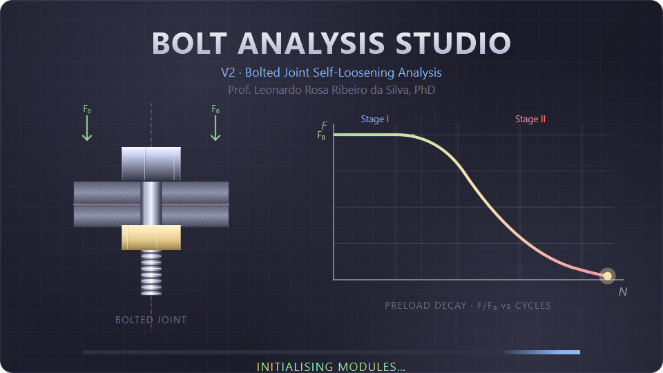
Tutorial de UsoUser Tutorial
Da abertura ao relatório: montar o modelo massa-mola-amortecedor de uma junta parafusada, configurar contatos e carga, rodar a análise de afrouxamento e ler os resultados — com prints reais de cada tela.From splash to report: build the mass-spring-damper model of a bolted joint, configure contacts and load, run the self-loosening analysis and read the results — with real screenshots of every screen.
Abrir o programaOpen the program
python run_app.pyNa pasta do projeto, rode o launcher. Por padrão abre o chrome V2 (a casca no estilo Abaqus/CAE). A tela de abertura anima enquanto os módulos são inicializados e some sozinha.In the project folder, run the launcher. By default it opens the chrome V2 (the Abaqus/CAE-style shell). The splash screen animates while the modules initialize, then dismisses itself.
python run_app.py— chrome V2 (padrão)— chrome V2 (default)python run_app.py --v1— janela clássica de 7 abas (fallback)— classic 7-tab window (fallback)python run_app.py --builder— só o MSD Model Builder— MSD Model Builder onlypython run_app.py --theme engineering— força uma paleta— forces a palette
F/F₀ ao longo dos ciclos, com o platô (Estágio I) e o joelho de colapso
(Estágio II).The splash curve is the program's own physics: the preload decay
F/F₀ over the cycles, with the plateau (Stage I) and the collapse knee
(Stage II).Anatomia da interfaceInterface anatomy
A janela tem zonas fixas. Você caminha da esquerda (o modelo) para a direita (as propriedades), de cima (o passo do fluxo) para baixo (as mensagens).The window has fixed zones. You move from the left (the model) to the right (the properties), from the top (the workflow step) to the bottom (the messages).
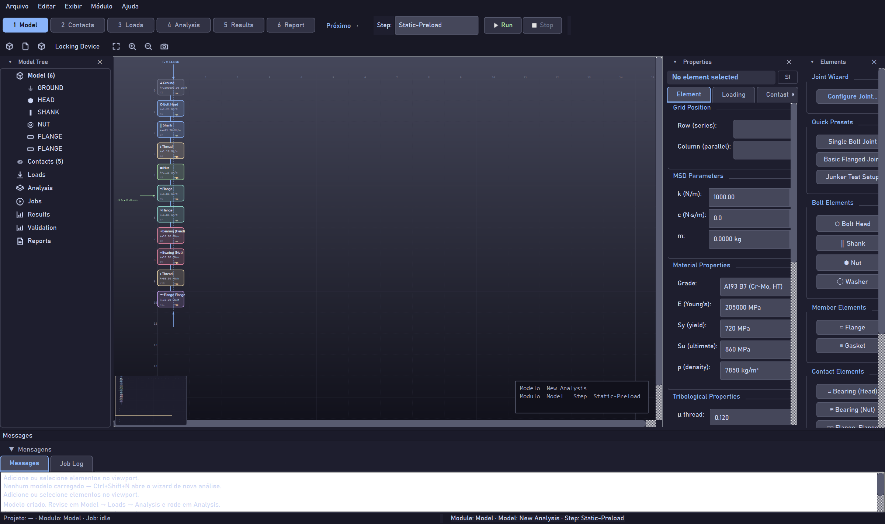
- 1Passos do fluxo — Model → Contacts → Loads → Analysis → Results → Report, com
Run/Stop.Workflow steps — Model → Contacts → Loads → Analysis → Results → Report, withRun/Stop. - 2Model Tree — a árvore de elementos, contatos, cargas e jobs.Model Tree — the tree of elements, contacts, loads and jobs.
- 3Viewport — o esquemático do MSD (pilha do parafuso) com zoom/pan/fit.Viewport — the MSD schematic (bolt stack) with zoom/pan/fit.
- 4Properties — inspetor do que está selecionado (rigidez, material, tribologia).Properties — inspector of the current selection (stiffness, material, tribology).
- 5Elements — paleta para adicionar peças e presets de junta.Elements — palette to add parts and joint presets.
- 6Mensagens — avisos de contexto + Job Log (colapsável).Messages — context warnings + Job Log (collapsible).
- 7Barra de status — projeto, módulo, step e estado do job.Status bar — project, module, step and job state.
Painéis: colapsar, fechar, reabrirPanels: collapse, close, reopen
Cada painel lateral tem colapsar (▾, vira uma faixa fina) e fechar (✕).
Reabra em Exibir → Painéis. Arraste as bordas para redimensionar — a alça
dos divisores é larga e realça em azul ao passar o mouse.Each side panel has collapse (▾, turns into a thin strip) and close (✕).
Reopen it under Exibir → Painéis. Drag the edges to resize — the splitter
handle is wide and highlights in blue on hover.
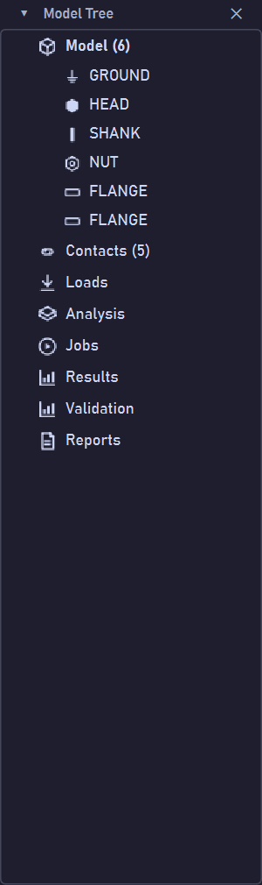
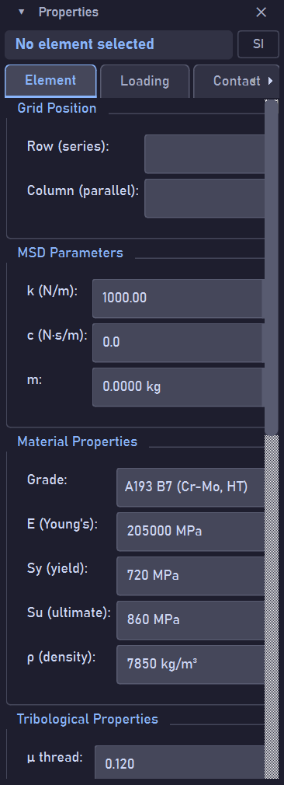
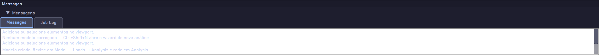
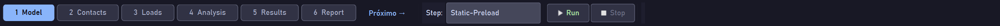
Nova análise pelo wizardNew analysis via the wizard
O jeito mais rápido de começar é o New Analysis Wizard. Você escolhe a topologia da junta e o wizard gera os elementos correspondentes — dá para adicionar/remover tudo depois no Model Builder.The fastest way to start is the New Analysis Wizard. You pick the joint topology and the wizard generates the matching elements — you can add/remove everything later in the Model Builder.
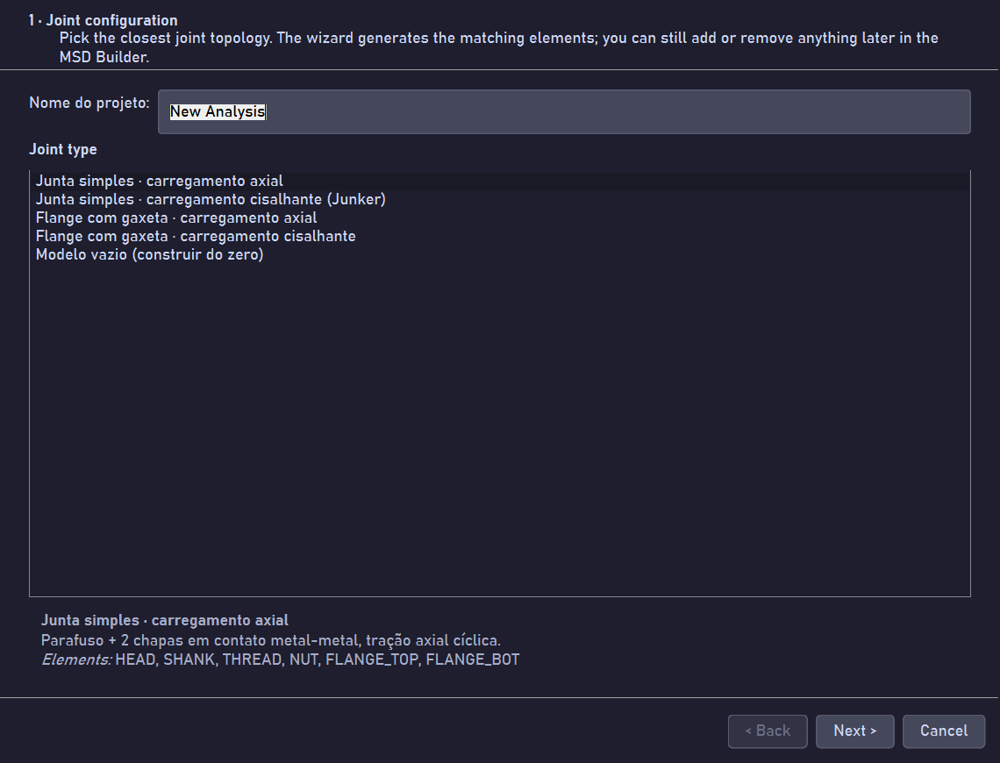
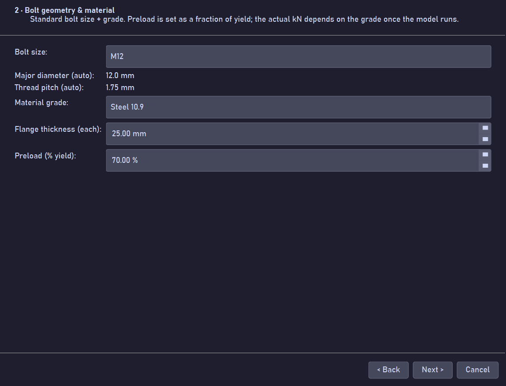
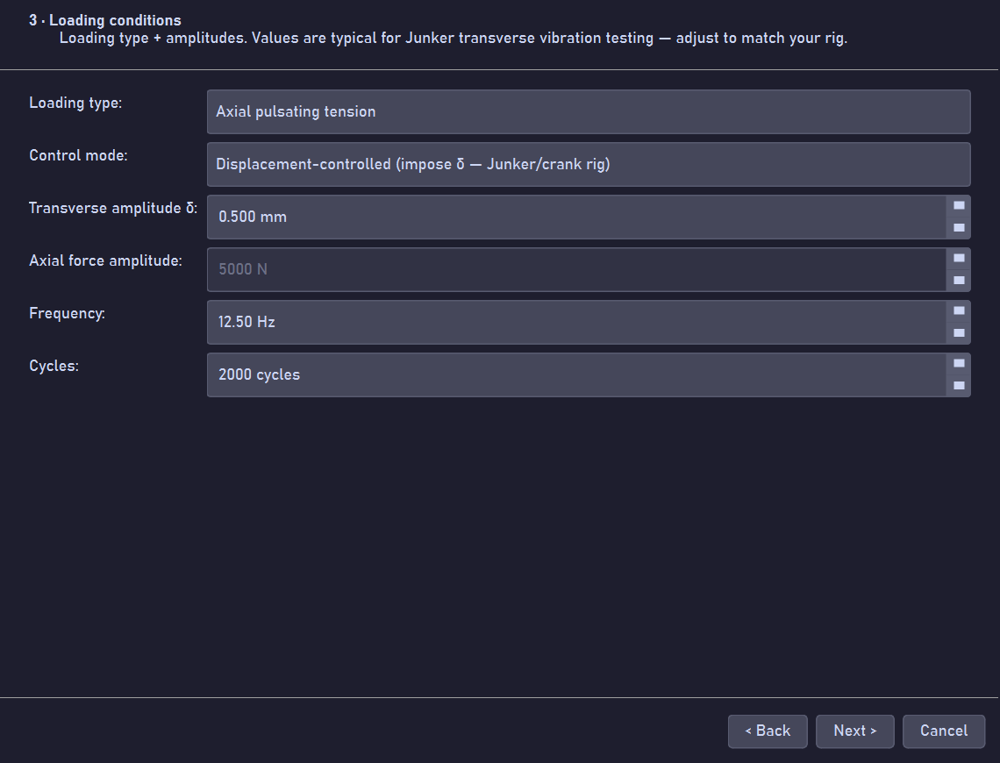
As páginas 4 e 5 (curva de referência opcional e revisão) fecham o wizard; ao finalizar, o modelo é adotado e você cai no módulo Model.Pages 4 and 5 (optional reference curve and review) close the wizard; on finish, the model is adopted and you land in the Model module.
Model — montar e inspecionar o MSDModel — build and inspect the MSD
O esquemático é a pilha física do parafuso: GROUND → HEAD → SHANK → THREAD
→ NUT mais as chapas (FLANGE) e os contatos (BEARING, THREAD, FLANGE-FLANGE).
Clique num elemento para editar suas propriedades à direita.The schematic is the bolt's physical stack: GROUND → HEAD → SHANK → THREAD
→ NUT plus the plates (FLANGE) and the contacts (BEARING, THREAD, FLANGE-FLANGE).
Click an element to edit its properties on the right.
- Element — rigidez
k, amortecimentoc, massam, material.— stiffnessk, dampingc, massm, material. - Loading — carga por-elemento (pré-carga, ΔT).— per-element load (preload, ΔT).
- Contact — atrito, desgaste e lubrificação da interface.— friction, wear and lubrication of the interface.
Contacts — atrito, desgaste, lubrificaçãoContacts — friction, wear, lubrication
No módulo Contacts o esquemático destaca as interfaces. Defina o coeficiente de atrito, o modelo de desgaste (Archard, energia, fretting, fadiga) e o regime de lubrificação de cada contato.In the Contacts module the schematic highlights the interfaces. Set the friction coefficient, the wear model (Archard, energy, fretting, fatigue) and the lubrication regime of each contact.
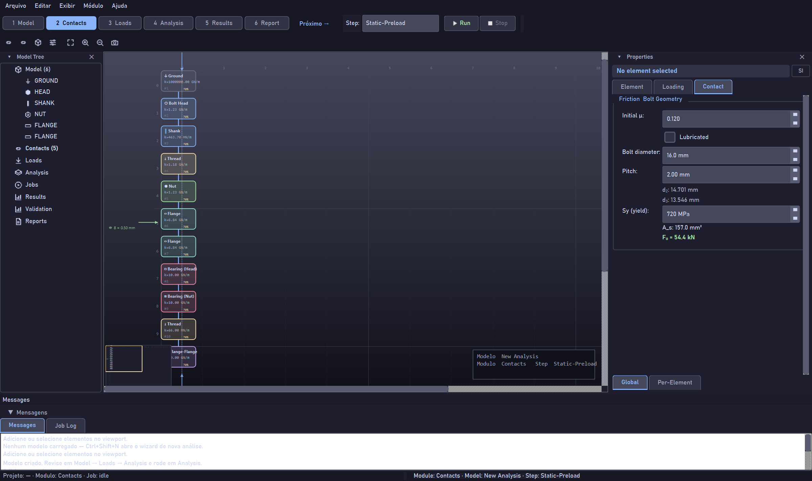
{F}.Every nut needs a ThreadContact. Parts carry no tribology — it attaches only to
the contacts and enters only the force vector {F}.Loads — o carregamentoLoads — the loading
No módulo Loads você configura o carregamento global e por-elemento:
pré-carga F₀, amplitude transversal (força ou deslocamento),
frequência, número de ciclos e ΔT.In the Loads module you set the global and per-element loading:
preload F₀, transverse amplitude (force or displacement),
frequency, number of cycles and ΔT.
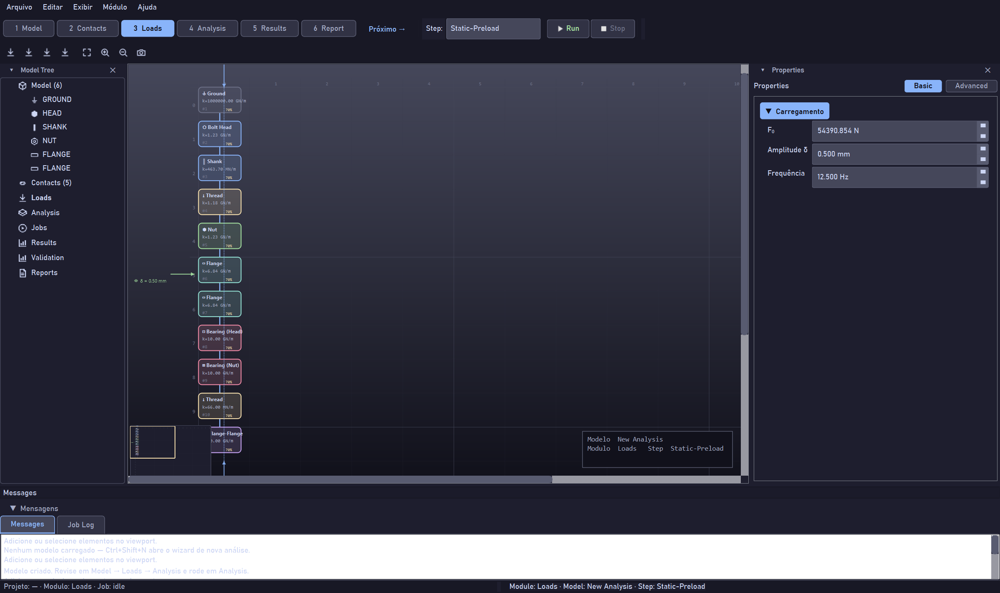
delta_amplitude): o escorregamento vem do deslocamento — muito mais
preciso que derivar da força.For ±0.5 mm crank tests, use imposed displacement
(delta_amplitude): the slip comes from the displacement — far more
accurate than deriving it from the force.Analysis — definir o step e rodarAnalysis — set the step and run
No módulo Analysis você revê o step (ex.: Static-Preload), confere as
escolhas automáticas (integrador HHT-α, controle por deslocamento, atrito Coulomb) e
dispara com ▶ Run na barra de passos. O progresso aparece no Job Log.In the Analysis module you review the step (e.g. Static-Preload), check
the automatic choices (HHT-α integrator, displacement control, Coulomb friction) and
launch with ▶ Run on the step bar. Progress appears in the Job Log.
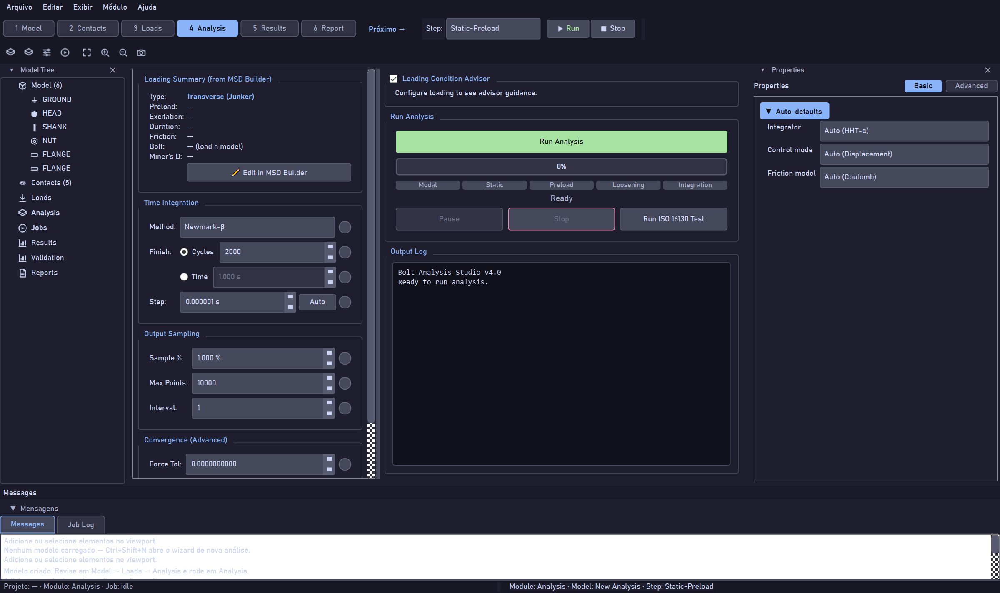
Results — ler os plotsResults — read the plots
O módulo Results tem a árvore Select Plot à esquerda (histórico temporal, decaimento de pré-carga, atrito & desgaste, afrouxamento, forças da junta, modal) e o gráfico à direita, com abas Summary / Plot View / Miner’s Rule / Diagnostics.The Results module has the Select Plot tree on the left (time history, preload decay, friction & wear, loosening, joint forces, modal) and the chart on the right, with Summary / Plot View / Miner’s Rule / Diagnostics tabs.
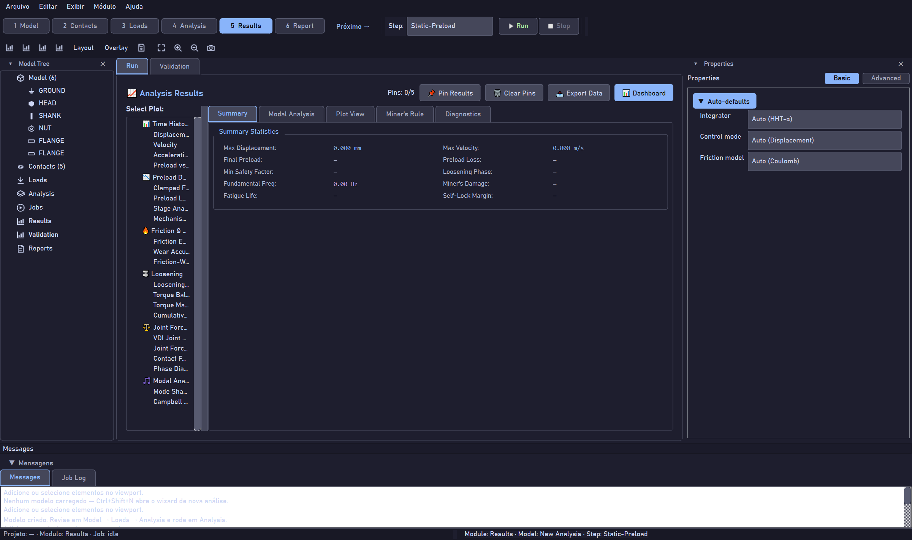
- Arraste o divisor para alargar a árvore de plots (a alça larga realça em azul).Drag the divider to widen the plot tree (the wide handle highlights in blue).
- Pin Results guarda um snapshot para sobrepor comparações.keeps a snapshot to overlay comparisons.
- Export Data exporta as séries; Dashboard mostra tudo de uma vez.exports the series; Dashboard shows everything at once.
Validation — modelo vs. dadoValidation — model vs. data
A aba Validation abre o navegador de casos: escolha uma fonte da literatura e veja a curva dado (artigo) × modelo, a decomposição por mecanismo empilhada e as métricas (MAE, RMSE, F/F₀ final).The Validation tab opens the case browser: pick a source from the literature and see the data (paper) × model curve, the stacked per-mechanism decomposition and the metrics (MAE, RMSE, final F/F₀).
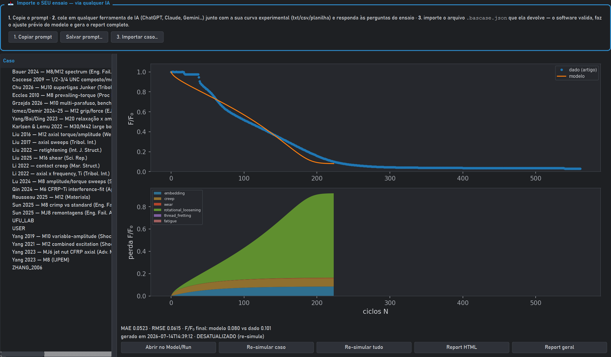
ancora_interna — dado vs. modelo (MAE 0,0523) + decomposição.Case ancora_interna — data vs. model (MAE 0.0523) + decomposition..bascase.json
devolvido — o software valida, faz o ajuste prévio e gera o report completo.In the top panel: 1) copy the prompt, 2) paste it into any AI along with your
experimental curve and answer the questions, 3) import the returned .bascase.json
— the software validates it, does the pre-fit and generates the full report.TemasThemes
Exibir → Tema · troca ao vivolive switchCinco paletas (Engineering Dark padrão, além de escura, clara, verde e alto contraste). A troca é ao vivo — painéis, gráficos e o esquemático acompanham.Five palettes (Engineering Dark by default, plus dark, light, green and high-contrast). The switch is live — panels, charts and the schematic follow along.
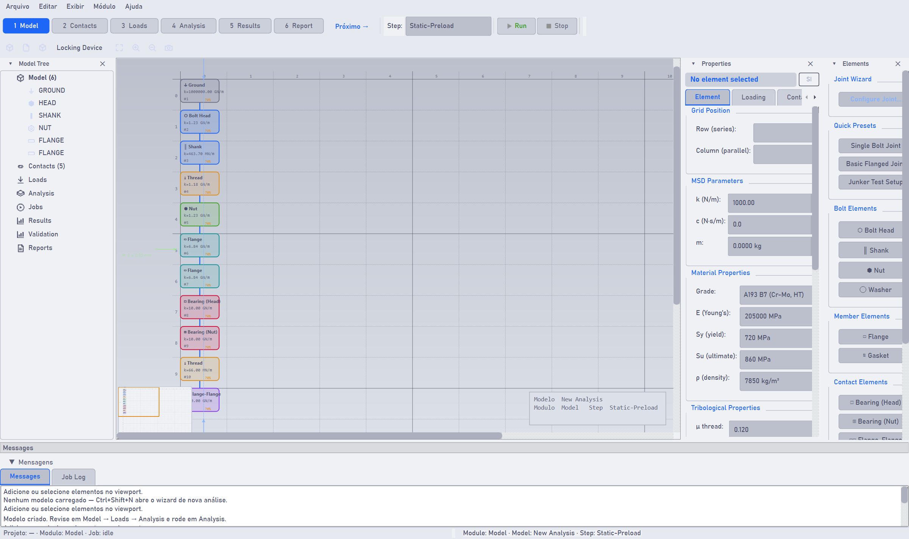
Atalhos & dicasShortcuts & tips
Ctrl+Shift+N — nova análiseCtrl+Shift+N — new analysis Próximo → avança o passoNext → advances the step Exibir → Painéis Exibir → Tema ▶ Run / ■ Stop
- Fluxo típico: wizard → Model (revisar) → Contacts → Loads → Analysis (Run) → Results → Validation.Typical flow: wizard → Model (review) → Contacts → Loads → Analysis (Run) → Results → Validation.
- Perdeu um painel? Está em Exibir → Painéis — nada fecha para sempre.Lost a panel? It's under Exibir → Painéis — nothing closes for good.
- As mensagens “Modelo criado…” aparecem na Área de mensagens embaixo.The “Modelo criado…” messages appear in the Messages area below.
- Para ensaios de laboratório, comece pelo preset Junker Test Setup.For lab tests, start from the Junker Test Setup preset.
New_Theory/variable_explorer/index.html)
documenta cada campo do modelo, os fundamentos (é um MSD, não um fit) e a galeria de
validação com todos os casos.The Variable Explorer (New_Theory/variable_explorer/index.html)
documents every model field, the foundations (it's an MSD, not a fit) and the validation
gallery with all cases.